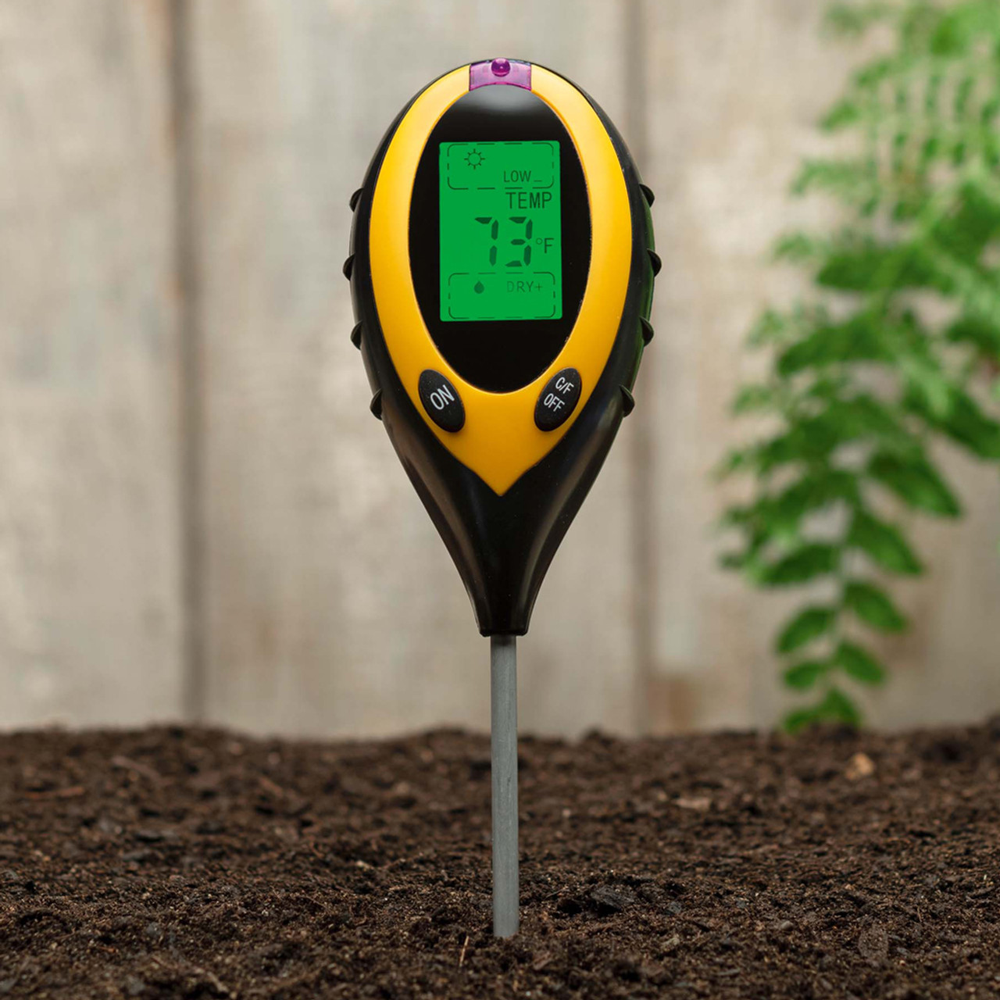

Well, the condition of soil can have a serious effect on the roots of plants; it's one of the most important envirmental factors affecting where plants can grow. However, while factors like temperature and light intensity are something you can find online about your location, soil quality can vary massively within the same region. This is why it's crucial that we test our soil before starting our project!
We can test soil using a soil tester device. A typical one will cost about £10, and will determine the pH and moisture level of the soil, as well as light intensity. Different plants need different pH levels in their soil; this is the best way to detemine this. The other thing we must determine is the texture, or 'type' of soil.
Not for beginners! These have over 25 percent clay, so while they are potentially fertile as they hold nutrients bound to the clay minerals, they also hold a high proportion of water. They drain slowly and take longer to warm up in spring than sandy soils. Clay soils are easily compacted when trodden on while wet and they bake hard in summer, often cracking noticeably. This is probably the hardest clay to work with, so avoid locations with this clay unless you have experience or no other options nearby.
This soil has lots of sand and little clay. They drain quickly after rain or watering, are easy to cultivate and work. They warm up more quickly in spring than clay soils. But on the downside, they dry out quickly and are low in plant nutrients, which are quickly washed out by rain, so perhaps consider adding non-harmful plant nutrients to a plot of this soil every so often. Sandy soils are often very acidic as well!
These are fertile, fairly well drained and hold more moisture than sandy soils, but are easily compacted so make sure the plot isn't likely to be stepped on by others. Other than this, one of the easiest soils to cultivate.